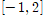
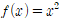
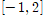
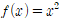

적분 – 정적분(고등학교)
|
※ 정적분
[12수학Ⅱ03-03] 정적분의 뜻을 안다. [12수학Ⅱ03-04] 다항함수의 정적분을 구할 수 있다. ※ 정적분의 활용 [12수학Ⅱ03-05] 곡선으로 둘러싸인 도형의 넓이를 구할 수 있다. |
구간  에서 곡선
에서 곡선.jpg) 와
와  축 사이의 넓이는 다음과 같다.
축 사이의 넓이는 다음과 같다.

(Q.17) 구간 에서 과 축이 이루는 영역의 면적을 구하여라.
에서 곡선와 축 사이의 넓이는 다음과 같다.
(Q.17) 구간 에서 과 축이 이루는 영역의 면적을 구하여라.
[참고자료]
https://www.mathfactory.net/11265
강의 동영상 열기
▲
○ 참여자
- 이상구 교수 (성균관대, 수학과)
- 이재화 박사 (성균관대, 에너지환경융합 KIURI 연구단)
- 이재윤 대표 (㈜프로키언)
○ 보유 특허
- 특허명칭 : 임의 수학 문제를 제공하는 클라우드 컴퓨팅 서버 및 방법 및 기록매체
- 등록번호 : 10-1560802
- 등록국가 : 대한민국
- 등록년도 : 2015
- 발명자 : 이상구 외 6인
- 기술이전회사 : ㈜프로키언 (대표: 이재윤)
○ 사사
- 성균관대 기술지주 주식회사, 『2020년 BRIDGE+ 실용화 개발지원 과제』
- 한국연구재단 혁신성장 선도 고급연구인재 육성사업, (No.2020M3H1A1077095).